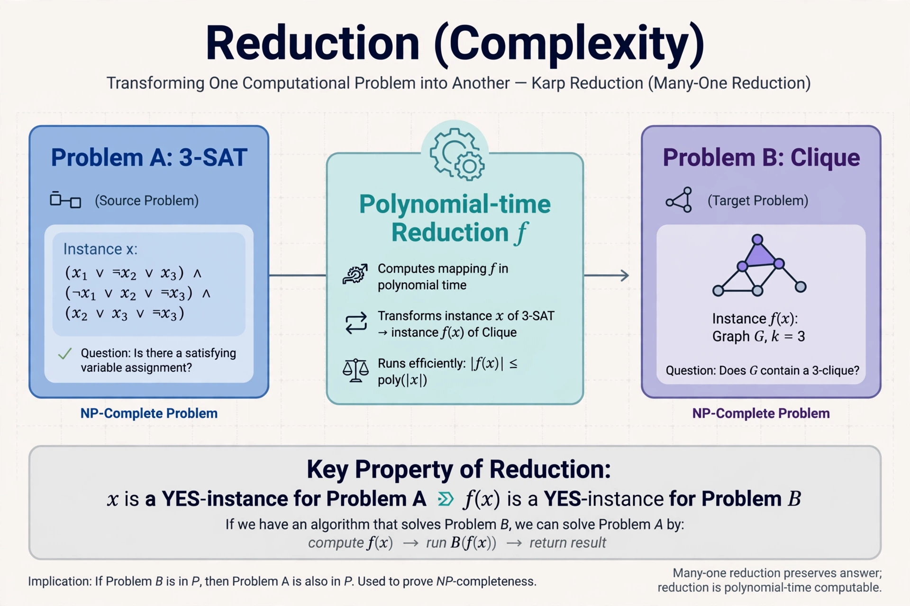

In computability theory and computational complexity theory, a reduction is an algorithm for transforming one problem into another problem. A sufficiently efficient reduction from one problem to another can be used to show that the second problem is at least as difficult as the first.
Many-one (mapping) reductions transform instances of one problem into instances of another so that a yes-answer is preserved. Turing reductions allow an algorithm for one problem to call an oracle for another as a subroutine. In complexity theory, polynomial-time reductions are used to prove NP-completeness: if a known NP-complete problem reduces to a new problem, the new problem is NP-hard.
Reductions establish relative difficulty between problems, define completeness for complexity classes such as NP, PSPACE and the arithmetical hierarchy, and show undecidability by reducing from the halting problem.
The concept grew out of work by Emil Post and Alan Turing on relative computability in the 1930s and 1940s, and was central to the Cook–Levin theorem of 1971 establishing that Boolean satisfiability is NP-complete.